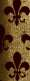
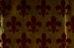

Burnhouse, m. 22nd June, 1869, Sarah Wilson, daughter of James Watson ; their issue :—
(a) Jeannie Wilson, b. 10th November, 1870, d. 2nd April, 1871.
(b) Isabella Tod, b. 1st July, 1872.
(c) William Tweedie, b. February, 1874, d. 1874.
(d) James Watson Tweedie, b. 28th October, 1875.
(e) Helen Eckford, b. 29th July, 1877.
(f) Sarah Jane, b. 8th October, 1879.
(g) Richard Tweedie, b. 21st July, 1882.
From some branch of this family may have been descended William Tweedie, the well-known London publisher and temperance advocate. He was born 19th July, 1821, his father being a William Tweedie of Haddingtonshire.
William Tweedie, b. 19th July, 1821, d. 27th October, 1874; m. 19th May, 1848, Mary Tapper, of Newton Abbot, Devonshire; their issue:—
1 William Tweedie, of whom presently.
2 Annie Janet, b. 26th April, 1851.
3 Mary, b. 14th April, 1853.
4 Henry Tweedie, b. 25th June, 1855, m. Mary Vincent ; their issue:—
(a) Muriel, b. Sept., d. October, 1883.
(b) Harry Gordon Tweedie, b. November, 1884.
5 George Richard Tweedie, b. 2nd October, 1857, m. Alice Mary
Dunning, of Middlesborough ; their issue :—
(a) Maurice George Tweedie, b. September, 1884.
(b) Hilda Mary, b. March, 1886.
6 Charles Edgar Scott Tweedie, b. 3rd October, 1861. The eldest son of William Tweedie and Mary Tapper :—
William Tweedie, b. 3rd March, 1849, m. 1872, Alice Annie Phillips; their issue:—
1 Flora Marguerita, b. 6th March, 1874, m. William Lachlan.
2 Estella Harper, b. 6th October, 1875, m. 1893, the Rev. James
Morris, D.D., of Virginia, U.S.A. ; their issue :—
(a) Mary Minor, b. July, 1894.
(b) Charles Morris, b. and d., 1895.
(c) Annie Rose, b. October, 1899.
3 William Tweedie, b. November, 1876, d. March, 1878.
4 George Phillips Tweedie, b. July, 1878, d. 2nd April, 1881.
5 Edgar Tweedie, b. December, 1879.
THE PARISH REGISTERS OF DRUMMELZIER.
Extracts from MARRIAGES. 1649 (the commencement) —1800.
1649. November 25. Thomas Gray and Jeane Tweedie proclaimed pro 3 tio , and a testimoniall given to the minister of Glenwhom to marrie them.
1652. May 23. Robert Twedy within this congregation and Christiane Wilson in the parish of Tweedmoor wer proclaimed pro primo.
1658. November 17. Archbald and Marion Tweedy married.
1659. August 25, David Tweedy and Margaret Hunter married.
1660. February 14. Adam Twedy and Christian Burne wer married.
1661. July 12. James Tweedie and Helen Tweedie in the parish of
Tweedmoor wer married.
1663. December 10. Thomas Hop and Agnes Tweedie wer married.
1664. December 11. Testificat given for marrying James Scot and Elspet
Tweidy. 1669. June 10. Alexander Tweedie and Marion Hunter wer married. 1669. November 14. Testificat given for marrying John Ewmont and
Margaret Tweedie. 1671. November 23. Johne Melros and Jonnet Tweedie wer married. 1678. November 20. James Meline and Marion Twedy wer married.
1682. December 3. William Hunter and Janet Tweedy proclaimed pro 3''°. 1691. October 16. James Twedy in the parish of Tweedmoor and Janet Murdosone in the parish of Kilbucho .... were married
Eodem die. Alexander Tweedy, fier of Kingledoors, and Janet Thomson proclaimed pro 3''°. Marriage day was sett to be the 3rd of March next.
1693. March 3. Johne Moffat and Jean Tweedy in the parish of Glenwhom
wer married.
1694. March 18. Michael Ramitch and Bessie Tweedie proclaimed pro
primo. 1702. James Tweidie and Mary Scot both in this paroch .... were
married June 9.
1710. May 5. Alexander Tweedie in this paroch and Agnes Johnston in the
parish of Glenhom .... proclaimed in order to marriage. 1710. November 24. William Tuedie in the paroch of Glenhom and Agnes
Brydan in the paroch of Lyne .... were married. 1712. January 11. Walter Tuedie and Jean Tait both in this paroch gave
up their names to be proclaimed in order to marriage. February 8.
They having been orderlie proclaimed, received a estimoniall
thereof. 1715. March 11. Robert Glendinning in the parish of Tweedsmuir and
Janet Tweedie in this parish .... were married.
1718. August 21. James Tweedie of Olifer in this parish and Margaret
Euart in the parish of Moffat .... wer married at Moffat.
1719. June 7. John Tweedie and Agnis Cairns both in this parish ....
wer married.
1723. June 27. James Proudfoot in this parish and Jean Tweedie in the
parish of Tweedsmuir .... were married at Tweedsmuir.
1724. June 26. Hugh Brunton in the parish of Manner .... and
Agnes Tweedie in this parish .... wer married.
1726. November 11. John Tweedie and Isabel Corser .... were
married at Kingledoors.
1727. June 9. Robert Ewart and Bessie Tweedie were married ....
from Tweedsmure.
1728. March 1. Thomas Tweedie tenent in Kingledoors in this paroch and
Mary Stevenson daughter to Alexander Stevenson in Dreva in the parish of Stobo were married.
1729. February 14. Thomas Tweedie in this paroch and Agnes Brown in
the parish of Glenholme were married at Glenholm. Note. — These two last entries appear between two dated May 11 and JO.
1729. December 19. Robert Dun and Elizabeth Tweedie after due and
orderly proclamation were married. 1732. April 21. John Veitch and Marion Tweedie (in the parish of
Broughton) were married by Mr. Simson minister of Broughtoun. 1734. June 7. Edward Veitch and Mary Tweedie were married. 1734. December 20. William Lauder (in the paroch of Crawfoord) and
Christian Tweedie were married at Crook. 1736. June 17. Gideon Tweedie and Isabel Stewart were married here
. . . . from Manner and Glenholme. 1736. December 31. Thomas Moffat in the paroch of Stobo and Agnes
Tweedie .... were married. 1739. November 30. After due and orderly proclamation James Johnston
and Sarah Tweedie (in the paroch of Tweedsmoor) were married.
1743. December 23. John Tweedie and Marion Scott were married. 1746. December 5. James Tweedie and Janet Miller were married.
1749. June 9. Ritchard Tweedie and Margaret Miller were married.
1750. June 9. Alexander Welch (tennent in Wester Stenhope) and Marion
Tweedie (eldest daughter ol Thomas Tweedie tennent in Kingle-
doors) were married at Kingledoors. 1752. June 12. John Johnston and Agnes Tweedie were married. 1752. November 24. John Murray and Barbara Tweedie were married at
Stenhope. 1754. June 11. John Tweedie tennent in Nether Minzion in the parish of
Tweedsmuir and Christian Tweedie daughter to Thomas Tweedie
tennent in Kingledoors in this parish were married at Kingledoors. 1756. December 4. Charles and Agnes Tweedies gave up their names to
be proclaimed in order to marriage. 1758. December 29. John Tweedie and Elizabeth Coe were married. 1762. May 21. David Watson and Agnes Tweedie both in this parish
gave up their names to be proclaimed in order to marriage. 1765. June 20. Thomas Clerkson and Christian Tweedie were married. 1765. December 20. Charles Murray and Margaret Tweedie were married. 1767. July 17. After due and orderly proclamation Alexander Frizel (in
Glenholm) and Jean Tweedie (in this parish) were married. 1778. June 6. James Noble and Christian Tweedie gave up their names
to be proclaimed in order to marriage. 1783. June 18. John Tweedie and Nicolus Moffat (in the parish of Tweedsmuir) were married at Crook by Mr. Muschet minister Tweedsmuir. 1787. June 15. John Affleck and Margaret Tweedie were married at
Muirburn by Mr. Gray minister at Broughton. 1790. September 21. Mr. Alexander Tweedie (Dreva) and Miss Anna
Welsh (in Patervan) were married at Edinburgh by the Revd.
Mr. Welsh. 1790. December 11. Mr. Alexander Gibson Mitchelhill in the parish of
Kilbrougha and Miss Mary Tweedie in Stenhope gave in their
names to be proclaimed for marriage.
1797. June 10. Mr. Alexander Tweedie in Stanhop and Miss Grizel Gray,
Lyne, gave in their names to be proclaimed for marriage and were married at Lyne by the Revd. Mr. Handiside the 15th cur'-
1798. The Revd. Mr. William Welsh minister in this parish and Miss
Marion Tweedie daughter of the deceased Mr. John Tweedie tenant in Stanhop gave in their names to be proclaimed for marriage the 6th October 1798 and were married at Edinburgh the 15th of said month.
THE PARISH REGISTERS OF DRUMMELZIER.
Extracts from BAPTISMS.
1649 (the commencement) —1800.
1649. July 8. Agnes Tvveedie daughter to Alexander Tweedie baptised. 1651 March 16. Archbald Tweedy in Drummelzear had a aughter
baptised named Barbara. 1651. April 10. Alexander Tweedy had a child baptised named William. 1653 April 2. Alexander Tweedy of Kingledorse had a daughter baptised
named Jean. 1653. December 14. After exercise Johne Twedy in the parish of Tweed-
'moor having produced a estificat from the elders there had a
daughter baptised named Elizabeth. 1658. January 31. Johne Tweedie had a soune baptised named David. 1660. March 7. Johne Tweedie of Kingledoris had a sonne baptised named
Robert. 1660. August 12. Thomas Tweedy soune to Marion Tweedy mentioned in
minute.
1660. September 30, David Twedy had a daughter baptised named Elspeth.
1661. March 3. Testimonial given for Janet Tweedie daughter to Archibald
Tweedie.
1661. May 5. Adam Tweedie had a daughter baptised named Jean.
1662. November 27. After exercise Johne Twedy of Chapel Kingledoris had
a daughter baptised named Jean.
1663. October 18. Adam Tweedie had a aughter baptised and named
Jannet.
1664. February 14. Testificat given to Margaret Tweedie in Kingledoors
daughter to Thomas Tweedie sometime in the Crook. 1664. May 11. Johne Tweedie had a son baptised named Michael. 1667. May 22. After exercise Johne Tweedie in the parish of Brochtone,
the kirk being vacant, had a sonne baptised named Johne.
1667. November 17. Jean Tweedie daughter to Adam Tweedie one of
three orphans in the parish.
1668. October 25. Jennet Tweedie an orphan.
1668. February 9. David Tweedie had a daughter baptised named Jean. 1668. March 1. Testificat given to Thomas Tweedie son to Archbald
Tweedie. 1670. March 7. David Tweedie of Chapelkingledoors had a aughter
baptised named Margaret.
1672. February 27. David Tweedie of Chapelkingledoors had a daughter
baptised named Bessie. 1672. September 29. John Tweedie in Brochtoune had a daughter baptised
named Agnes, the kirk being vacant. 1674. March n. After sermon David Tweedie had a son baptised named
James.
1676. June 11. David Tweedie oi Chapelkingledoors had a aughter
baptised on June 4 1676 named Agnes.
1677. November 18. Testificat received for Alexander Tweedy son to Johne
Tweedy from Mr. Patrick Fleming minister of Stobo dated 13 November 1677.
1678. April 28. David Tweedy had a daughter baptised named Mary. 1678. June 30. William Twedy had a daughter baptised named Margaret.
1678. December 29. Alexander Tweedie had a aughter baptised named
Margaret.
1679. May 9. William Tweedy of Wrae in the parish of Glenwhom had
a sonne baptised named William.
1680. April 21. After sermon David Twedy of Kingledoors had a daughter
baptised named Christine.
1681. October 2. William Twedy had a one baptised named David.
1682. May 21. David Tweedie of Kingledoors had a son baptised named
David.
Note. — The Register is blank from yanuary 16S3 to August i68g. The minister had been " turned out for nonconformity and not taking the test, and the kirk was planted by the Bishop of Glasgoiu with one Mr. fames Simsone." During that time " collections for the poor were deposited in Alexander Tweedy of Kingledoors his hands." Baptisms and Proclamations took place, it is stated, during that time, but no note has been kept of them.
Eodem die. Walter Twedy had a son baptised named James. 1693. December 26. Alexander Tweedie of Kingledoors had a one baptised named David.
1700. March 17. After sermon Alexander Tweedie in Hopcarten had a
daughter baptised called Margrate.
1701. June 1. Archibald Tweidie in Stainhop had a aughter baptised
called Jennet. 1701. November 28. The people being convened for examination Walter
Tweedie had a daughter baptised called Jean. 1705. December 18. Archbald Tuedie in Stanhope had a on baptised
called Thomas.
Note. — The name William is deleted and Thomas written in much blacker ink.
1706. March 27. Robert Tuedie of Kingledoores had a aughter baptised called Jane after sermon and examination at Kingledors.
1706. September 26. James Tuedie in Stanhope had a son baptised called
Archibald.
1707. June 13. Robert Tuedie of Kingledoors had a on baptised called
Ebenezer.
1708. February 20. After sermon and examination at Polmood John
Johnston and Richard Tweedie, both servitors to Polmood, the former had a son baptised called Robert and the latter a daughter called Margaret.
1709. April 17. James Tweedie in Stonhope had a aughter baptised
called Janet.
1709. October 24. After sermon at Kingledoors Robert Tweedie of
Kingledoors had a daughter baptised called Walter.
1710. July 2. Alexander Tweedie in Drummelzier had a daughter baptised
called Janet.
1711. May 21. After sermon at Kingledoors Robert Tweedie of Kingle-
doors had a daughter baptised called Keatrine. 1713. January 4. Walter Tweedie in Stonhope had a son baptised called John.
1713. August 9. William Tweedie in Stonhope had a son baptised called
William.
1714. May 20. James Tweedie in Stonhoop had a on baptised called
Robert. 1719. June 19. John Tweedie in Stonhope had a on baptised called
William. 1722. March 4. John Tweedie in Pottervain had a aughter baptised
called Janet. 1724. January 28. John Tweedie in Trapoda had a on baptised called
John. 1727. January 24. After sermon and examination at Kingledoors John
Tweedie had a son baptised called James. 1729. May 6. Thomas Tweedie tennent in Kingledoors after sermon there
had a daughter baptised called Marion. 1729. December 12. Thomas Tweedie in Drummelzier had a aughter
baptised called Janet. 1731. March 21. John Tweedie in Stenhope had a on baptised called
Archibald. Eodem die. Thomas Tweedie in Drummelzier had a aughter baptised
called Agnes. 1731. April 1. After sermon and examination at Kingledoors Thomas
Tweedie tennent there had a daughter baptised called Christian.
1731. April 25. John Tweedie in Trepeda had a on baptised called
Richard.
1732. December 7. After sermon in Kingledoors Thomas Tweedie tennent
there had a daughter baptised called Margaret.
1733. April 8. John Tweedie in Stenhope had a on baptised called
Charles. Eodem die. Thomas Tweedie in Drummelzier had a aughter baptised
called Jean. 1735- January 11. After sermon in Kingledoors Thomas Tweedie tennent
there had a daughter baptised called Ann.
1737. November 25. After sermon in Kingledoors Thomas Tweedie tennent
there had a daughter baptised called Jean.
1738. January 18. After examination in Stenhope John Tweedie there had a
son baptised called John.
1739. October 10. After sermon in Kingledoors Thomas Tweedie tennent
there had a son baptised called Alexander.
1740. March 25. John Tweedie servant Easter Stenhope had a daughter
baptised called Agnes. 1740. April 6. Thomas Tweedie in Drummelzier had a daughter baptised called Christian.
1743. June 28. After sermon at Kingledoors Thomas Tweedie tenant there
had a son baptised called Thomas.
1744. April 22. Thomas Tweedie in Drummelzier had a on baptised
called Archibald.
1745. January 27. After sermon at Kingledoors Thomas Tweedie tennent
there had a son baptised named Alexander. 1745. June 30. John Tweedie in Easter Stenhope had a daughter baptised
named Mary. 1747. February 31 (f January'). Isabel Tweedie spouse to Joseph
Tweedie in Stenhope brought forth twins (a son and a
daughter) and being in a eak condition after sermon in Wester
Stenhope were baptised, the boy named Walter and the girle
Babie. 1747. October 25. Janet Miller spouse to James Tweedie in Drummelzier
brought forth a son upon Friday the 10th inst. and was this day
baptised named John.
1747. November 26. Marion spouse to John Tweedie in Stenhope brought
forth a son upon 15th inst. and this day after examination at Easter Stenhope was baptised named Walter.
1748. February 10. Isabel Tweedie spouse to Joseph Tweedie in Stenhope
brought forth a son upon Munday the 1st inst. and was this day after sermon at Wester Stenhope baptised named David.
1748. May 1. Agnes Brown spouse to Thomas Tweedie in Drummelzier Place brought forth a son upon Munday the 17th of April last and was this day baptised named Alexander.
1748. September 20. Mary Stevenson spouse to Thomas Tweedie tennent
in Kingledoors brought forth a daughter upon Tuesday the 13th inst. and after sermon there was baptised named Mary.
1749. December —. Isabel Tweedie spouse to Joseph Tweedie in Wester
Stenhope brought forth a upon the day of this instant
and the same day was baptised there named
1749. December 24. Janet Miller spouse to James Tweedie in Drummelzier
brought forth a daughter upon Friday the 15th inst. and was this day baptised named Jean.
1750. January 25. Margaret Miller spouse to Ritchard Tweedie in
Drummelzier brought forth a daughter upon Munday the 15th inst. and after a dyet of examination was this day baptised named Isabel.
1751. June —. Isabel Tweedie spouse to Joseph Tweedie in Wester
Stenhope brought forth a upon the day of and was
this day after sermon there baptised named
1751. December 29. Margaret Miller spouse to Ritchard Tweedie in
Drummelzier brought forth a on upon Sabbath the 15th inst. and this day was baptised named James.
1752. May 31. Janet Miller spouse to James Tweedie in Drummelzier
brought forth a daughter upon Wednesday the 20th inst. and was this day baptised named Mary.
1754. July 21. Margaret Miller spouse to Ritchard Tweedie in Drummelzier
brought forth a daughter upon Sabbath the 14th inst. and was this day baptised named Janet. *i754. November 10. Born. Janet Affleck and John Tweedie in Putervan had a daughter baptised the 26th November by the Rev. William Wallace minister of the Gospel at Drumelzier, the child's name was Christian Tweedie. This child's name was not filled up in due time.
1755. January 19. Janet Miller spouse to James Tweedie in Drummelzier
brought forth a aughter upon the 12th inst. and was this day
baptised named John. 1759. May 28. Isabel Tweedie spouse to Joseph Tweedie in Craigkingle-
doors brought forth a son upon Saturday the 26th inst. and this
day after sermon there was baptised named Robert. 1759. October 22. Elizabeth Coe spouse to John Tweedie in Easter
Stenhope brought forth a aughter upon Sabbath the 14th inst.
and this day after sermon there was baptised named
* This entry is inserted in Register after one dated 22nd March, 1780.
1761. June 4. Agnes Scot spouse to James Tweedie in Easter Stenhope
brought forth a daughter upon Wednesday the 20th of May last and after sermon there was baptised named Marion.
1762. April 12. Isabel Tweedie spouse to Joseph Tweedie in Craigkingle-
doors brought forth a son upon Friday the 26th of March last and after sermon there was this day baptised named John.
1762. December 3. Agnes Scot spouse to James Tweedie in Stanhope brought forth a daughter upon Munday the 29th of November last and this day after sermon there was baptised Janet.
1764. October 24. Barbara Tweedie spouse to John Tweedie in Easter Stenhope brought forth a daughter upon Munday 22nd inst. and this day after sermon there was baptised named Grizel.
1 769. February 5. Agnes Loch spouse to William Tweedie in Drummelzier brought forth a son upon Tuesday the 21st of January last and was this day baptised named John.
1770. May 11. Christian Tweedie spouse to John Tweedie tennent in Wester Stenhope brought forth a son upon Saturday the 5th inst. and this day after sermon there was baptised named Robert.
Note. —No entries May nth 1770 to March 1771.
1772. April 15. Agnes Loch spouse to William Tweedie in Drummelzier brought forth a daughter upon Friday the 3rd inst. and was this day baptised named Jean.
1 773- November 25. Christian Tweedie spouse to John Tweedie tenant in Stenhope brought forth a son upon Sabbath the 22nd instant and this day after sermon was baptised named Robert.
1776. May 24. Agnes Loch spouse to William Tweedie in Drummelzier
brought forth a son upon Saturday 18th inst. and was this day baptised named Thomas.
1777. November 14. Christian Tweedie spouse to John Tweedie tenant in
Stenhope brought forth a aughter upon Munday night the 10th
inst. and was this day after sermon there baptised named Christian. 1779- January 3. Agnes Loch spouse to William Tweedie in Drummelzier
brought forth a daughter upon Sabbath the 28th (sic) inst. and was
this day after sermon baptised named Mary. 1784. April 17. John Tweedie in Kingledoors and Nicholas Moffat his
spouse had a son born the 12th inst. and was baptised this day at
Tweedsmuir named Richard.
Note. — The preceding entry appears a second time, but there is no variation except that (as generally in this Register) the mothers name comes first.
1798. John Tweedie son to Mr. Alexander Tweedie and his spouse
Mrs. Tweedie in Stanhope born the nth April, baptised 22nd by the Rev. Mr. Welsh.
1799. Janet Tweedie daughter of Mr. Alexander Tweedie and his spouse
Mrs. Tweedie in West Stanhope born the 23rd of December 1799 and baptised the 15th of January 1800 by the Rev. Mr. Welsh at
Stanhope.
THE PARISH REGISTERS OF DRUMMELZIER.
Extracts from DEATHS.
1649 ( THE commencement) —1800.
1651. January 13. William Tweedy.
1651. June 5. Archibald Tweedy.
1654. January 21. Barbara Tweedy.
1655. July 6. Robert Tweedy.
1656. July 27. Marin Twedy.
1657. March 7. Alexander Tweedy. 1659. May 6. David Tweedy. 1663. March 27. Jeane Tweedy. 1663. November 19. Adam Tweedy. 1672. April 4. Jean Tweedie.
1675. April 7. James Tweedie.
1677. May 26. Archibald Tweedie.
1677. August 3. Margaret Tweedie.
1678. April 1. Jean Tweedie.
1679. July 5. Marie Tweedy.
1681. November 12. Christie Tweedy. 1683. February 28. Marin Tweedie.
Note. —" From 1683 till i6go the minister was turned out for not taking the test and not conforming" and there are no entries from February 1683 till December 1690, also see note supra.
1690. December 22. Jean Tweedie. 1700. December 6. David Tweedie.
1711. June 12. Robert Tweedie of Kingledors who was buried in the churchyard of Tuedsmoor.
744. June 30. Janet Tweedie spouse to Adam Cairns tenent in Wester Dawick aged about 42 years was buried at Dawick.
745. October 16. Mary Tweedie a child daughter to John Tweedie in Easter Stanhope was buried.
747. February 2. Babie Tweedie daughter to Joseph Tweedie in Stenhope (one of the twins) was buried at Tweedsmure.
747. June 14. William Tweedie son to John Tweedie in Stenhope aged about 13 years was buried.
748. May 7. Ebenezer Tweedie son to the deceased Robert Tweedie of Kingledoors aged about 40 years was buried.
748. July 27. Thomas Tweedie son to John Tweedie in Stenhope aged about 18 years was buried.
748. August 21. Walter Tweedie son to John Tweedie in Easter Stenhope a child about nine months old was buried.
749. May 6. Alexander Tweedie son to Thomas Tweedie in Drummelzier Place a child one year old was buried.
749. May 21. Jean Tweedie daughter to Joseph Tweedie in Wester
Stanhope a girl about 7 years of age was buried at Tweedsmure. 749. May 29. John Tweedie son to James Tweedie in the east side of
Drummelzier a child aged one year and seven months was buried. 752. June 8. James Tweedie sometimes in Drummelzier aged about
70 years was buried. 754. September 14. James Tweedie son to Ritchard Tweedie aged two
years and three quarters was buried.
756. July 7. Bessie Tweedie relict of the deceased William Veitch in Logan aged about 44 years was buried.
757. June 19. Alexander Tweedie son to Thomas Tweedie in Drummelzier Place aged 8 years was buried.
757. June 30. Thomas Tweedie in Drummelzier Place aged 50 years was
buried. 757. December 1. Marion Scot spouse to John Tweedie in Stenhope aged
40 years was buried. 759. June 26. Janet Miller spouse to James Tweeaie now in Chapelgill
aged about 38 years was buried. 761. April 23. Christian Laidlaw spouse to James Tweedie in Arthurstone
aged about 30 years was buried. :762. July 10. Marion Tweedie daughter to James Tweedie in Stanhope
a child five weeks old was buried. :762. October 24. Christian Barkley mother-in-law to John Tweedie in
Pittervin a woman about 70 years was buried. :762. December 25. Agnes Brown relict of the deceased Thomas Tweedie a woman about 58 years was buried.
1763. January 8. Jean Tweedie relict of James Proudfoot in Lyn was
buried here. 1766. October 20. Marion Tweedie spouse to John Veitch in Hapkartoun
a woman about 70 years died and was buried here. Drummelzier. 18 June. 1776. Charles Tweedie in Caverhill late tenant
in Burnside of Drummelzier aged about 43 years died and was buried
here. 1777. March 3. Agnes Tweedie widow of the deceased Hugh Brunton in
Drummelzier aged 80 years died and was buried having the use of
the mortcloth free. 1777. November 26. Christian Tweedie daughter to John Tweedie tenant
in Stenhope a child 15 days old died and was buried in Tweedsmure
churchyard.
1781. April 18. John Tweedie in Stanhope died and was buried here this
day aged 78 years.
1782. March 17. Agnes Tweedie in Potervin died and was buried in the
churchyard of Tweedsmuir aged 70 years and upwards. 1793. April 29. Alexander Tweedie a hild from Manner Water was
buried here. 1798. March 9. Janet Tweedie spouse of Adam Veitch was buried here. 1800. March 3. Richard Tweedie was buried here.
THE. PARISH REGISTERS OF BROUGHTON.
Extracts from BAPTISMS.
1697 (the commencement) —1800.
1706. May 19. Richard Tweedie in Brughtoun had a child baptised called John.
1709. October 23. William Tweedie in Brughtoun had a hild baptised
called Jean.
1710. November 26. Richard Tweedie in Brughtoun had a child baptised
called Georg.
1711. April 13. William Tweedie in Callet within the paroch of Kilbucho
had a child baptised here called Agnes. 1715. March* 13. William Tweedie in Brughtoun Mains had a child baptised
called John. 1715. November 27. William Tweedie in Callet had a child baptised called
John. 1717. July 18. William Tweedie in Brughtoun Mains had a child baptised
called Margaret. 1719. January 29. William Tweedie in Brughtoun Mains had a child baptised
called James. 1723. November 30. John Tweedie in Brughtoun Shiels had a hild
baptised called Agnes.
Above entry for 28 April 1725 there is an entry worn away except the words " Mains of Brughtoun had a child baptised called Thomas."
1729. June 1. John Tweedie in Brughtoun Mains had a hild baptised
called Agnes. 1733. April 1. John Tweedie in the paroch of Kilbucho had a aughter
baptised here called Margaret. August 1752. David Tweedie tenant in Upper Mains of Broughton had a
child baptised named Richard.
No entries of marriages or deaths of Twee dies in the Broughton Registers.
* The word " March" is very faint and looks as if it had been erased.
THE PARISH REGISTERS OF GLENHOLM.
MARRIAGES.
1784—95.
Note. — There are only nine entries contained on one page, and the name Tweedie does not occur among them.
Extracts from BAPTISMS. 1747 (the commencement) —1800.
1756. James son to Richard Tweedie at Holms commonfoot and Margaret
Miller his spouse was born the day of October and baptised
the twenty-seventh day thereof.
1757. Helen daughter to James Tweedie in Glenkirk and Janet Millar his
spouse was born the nth day of May and baptised the seventeen day of said month.
1759. John son to Richard Tweedie and Mary (? Margaret) Miller was born
on second day of month and baptised 7th thereafter.
This entry is faintly interlined between two entries dated respectively 5 March and 6 May.
1760. Jean daughter to Alexander Tweedie and Janet Cossar his spouse was
born the thirtieth day of March and baptised the 6th day of April thereafter.
1761. Alexander son to Alexander Tweedie in Slack and Janet Cossar his
spouse was born upon the sixteenth day of March and baptised the twentieth day thereof.
1762. Margaret daughter to Alexander Tweedie in Heughbrae and Janet
Cossar his spouse was born the twelfth day of October and baptised
the seventeenth day thereof. 1764. Robert son to James Tweedie in Glenkirk and Agnes Scott was born
the twenty-fifty day of May and baptised the nineteenth day of June
thereafter. 1764. Margaret daughter to Richard Tweedie in Lushioot and Margaret
Miller his spouse was born the fifteen day of September and baptised
the twenty-fourth day thereof.
1784. Thomas Stevenson son to Alexander Tweedie of Quarter Esq. and Anny Carmichal his spouse was born on the nineteenth day of April and baptised on the twentieth day thereof.
1786. Michael son to Alexander Tweedie Esq. of Quarter and Anny
Carmichal his spouse was born on the fifteenth day of Aprile and baptised on the seventeenth day thereof.
1787. Moures son to Alexander Tweedie Esq. of Quarter and Ann Carmichal
his spouse was born on the 2nd day of October and baptised the 6th. (^'Maurice" on margin in different hand.) 1 789. Alexander son to Alexander Twedie Esq. of Quarter and An Carmichal
his spouse was born the 14th day of June and baptised the 24 day
thereof. 1791. Michael son to Alexander Tweedie Esq. of Quarter and Anny
Carmichael his spouse born on the eleventh day of November and
baptised on the forteenth thereof. 1794. Mary daughter of Alexander Tweedie Esq. of Quarter and Annie
Carmichael his spouse was born on the second day of April 1794
and baptised on the seventh day of that month. 1796. Ann daughter of Alexander Tweedie Esq. of Quarter and Anne
Carmichael his spouse was born on the seventeenth day of February
1796 and baptised on the twenty-sixth day of said month. 1799. John son of Alexander Tweedie Esq. of Quarter and Ann Carmichael
his spouse was born on the twenty-third day of September 1799
and baptised on the twenty-eight day of said month.
THE PARISH REGISTERS OF GLENHOLM.
Extracts from DEATHS. 1783 (the commencement) —1851.
1784. January 6. Mary Stevenson, Lady of Quarter. William Welsh Esq. of Mossfennan. Christian Welsh his spouse. Alexander Welsh in Cardon, their son. Mary Tweedie or Welsh his spouse.
Note. — These four entries arc consecutive in Register, but no dates are
given, the immediately preceding date being 8 June ij86 and the following
one 24 October 1822.
Anne Carmichael or Tweedie of Quarter relict of Alexander Tweedie.
Note.— No date is given for the above entry {the most of the death entries have no dates), but the last preceding date is 23 February 1841 and the next succeeding date 17 January 1841.
THE PARISH REGISTERS OF TWEEDSMUIR.
Extracts from MARRIAGES. 1644 (the commencement) —1800.
1645. The 23 of October. Walter Chisolme and Helen Twedie both in
this congregatioune were married. 1647. May 23. Johne Hall (in Lanerick) and Christiane Twedy were
proclaimed for the last tyme. 1649. February 14. James Twedie and Agnes Thomsone wer married. 1652. January 22. Johne Twedie (lawful sone to Patrick Tweedie of Oliver)
and Elizabeth Laidlay (in Eister Oliver) were married at our Kirk
of Tweedsmuir. 1652. May 23. Robert Twedie in the parochine of Drummelzear and
Christiane Wilsone in this parochine (proclaimed) for the first
tyme &c.
1652. May 30. Said parties proclaimed for the second time.
Note. — There is no entry in this Register of the third proclamation nor of the marriage.
1653. July 27. Said Walter Tweedie (in Wester Hairstone) and Christian
Noble were married. 1657. July 2. Said Archibald Tweedie (of Peebles) and Elizabeth Twedie
married. 1659. July 31. This day David Twedie in this congregation and Margaret
Hunter in the congregation of Drummelzier were proclaimed for the
second* time. 1659. August 7. Said David Tweedy and Margaret Hunter were proclaimed
for the last time. 1663. May 10. Robert Tweedie and Janet Langtoun were proclaimed.
Testimonial produced for Robert Tweedie from Drummelzier. 1663. November 8. This day Thomas Hope in Over Olipher and Agnes
Tweedie daughter lawfull to umquhill Alexander Tweedie of Chappell
Cingledoores were proclaimed.
* There is no note of the first proclamation, there being no entries from 12th June to 28th July.
1665. September 10. Thomas Tweedie (of Drummelzier) and Jeane Tod
(proclaimed) pro primo. 1669. May 23. Alexander Tweidie and Marion Hunter pro primo. 1669. September 5. " John Porteous and Janet Tweidie his spous in that
part that belonges to the paroch of Drumalzear." 1671. December 14. Collect at the mariage of Jo Telfer and Margaret
Tweedie 20/-. 1673. February 19. Collect at the mariage of Thomas Watson and Margaret
Tweedie 15/-.
1679. December 18. Marriage. John Tweedie and Jonet Brydon. Testi-
monial produced from the minister of Glenolm (for the woman).
1680. May 9. This day were proclaimed John Tweedie and Elspeth Tweedie
(daughter of John Tweedie of Oliver) pro primo.
1681. June 12. Proclaimed Thomas Tweedie of Olifer and Christian
Williamson in the paroch of Peebles.
1681. November 29. This day wer married Adam Clerk and Jennet Tweedie.
1682. December 10. This day wer married William Hunter and Jenet
Tweedie. 1723. March 12. Was married Alexander Tweidie and Margret Cheisem at Badlew.
1723. April 26. Was married Adam Bolo and Isobel Tweidie.
1724. May 16. John Johnston son to William Johnston in Tala gave up
his name in order to marig with Mary Tweidie daughter to the
deceist James Tweidie in Badlow. 1724. July 11. Was married John Johnston and Mary Tweidie (daughter
to the deceased James Tweidie in Badlew). 1727. May 12. Robert Eowat gave up his name in order to marig with
Bessi Tweidie both in this paroch. 1752. February 25. James Blakstoks in the paroch of Cowlter gave up his
name in order to marriage with Betie Tweidie in this paroch of
Tweedsmuir.
1752. April 3. Was married Alexander Gibson in the paroch of Edelston
with Veronica Tweidie (daughter of Alexander Tweedie of Nether Minzion) in the paroch of Tweidsmoor.
1753. June 10. Was married John Welch in Tweidhopefoot and Margret
Tweidie. Alexander Hodge and Mary Tweedie were married upon the 31 day of
December 1734. William Wat and Mary Tweedie were married upon 16 day of December 1736. James Simpson and Jean Tweedie were married upon the 2 day of September
1737-
James Jonston and Sareth Twidey were married upon the 30 November 1739.
1744 1746
1752
1759 1762
William Patterson and Elisabeth Twidey were married upon June the 13 day
1740. 1742. June 11. John Geades and Iesebell Twidey was marid.
September —. Walter Twidey and Janet Blakewll was marid. December 11. Walter Anderson and Jean Twidey was maride. March 17. Was married James Blakstolks and Bettie Tweidie. February 2. Was married James Tweedie and Marray Welsh. April 1. Was married Michall Anderson tenant Cramelt of Megget and Marion Tweedie daughter of the deceast Alexander Tweedie late tenant in Nether Mingon in this parish. 1769. January 6. Richard Tweedie in Chapplegill Glenholm parish and Helen Paterson daughter to the deceased Paterson
in Hankshaw. 1779. December 17. Mr. John Anderson in Crawmault and Miss Peggie Tweedie daughter of Thomas Tweedie of Oliver Esq. were married. 1782. September (?). James Proudfoot in Moffat and Jean Tweedie from
Marchwall in this parish were married at Moffat. 1786. February 16. Mr. Thomas Tweedie tenant in Nether Minzion and Miss Bethea Tweedie daughter of Thomas Tweedie Esq. of Oliver were married. 1792. April 13. Mr. John Crawford merchant of Leith and Miss Anne Tweedie daughter of Thomas Tweedie Esq. of Oliver were married.
THE PARISH REGISTERS OF TWEEDSMUIR.
Extracts from BAPTISMS.
1644—1800.
(Note. — Births, Marriages, and Deaths intermixed till 1683 and among miscellaneous matters.)
1648. May 27. Wer baptised .... lykwayes Johne Twedie lawfull
sone to James Twedy in Wester Oliver.
1649. September. The third day of this instant was baptised Johne Twedie
lawfull sone to Thomas Twedie in Crook.
1650. March 10. Baptised this day Margaret Twedie lawfull daughter to
James Twedie in Eister Hairstone
1651. July 31. Baptised Margaret Twedie lawfull daughter to Johne Twedie
in Wester Hairstone. 1651. December 21. Baptised this day Agnes Twedie lawful daughter to James Twedie in Eister Hairstone.
1652. March 24. Was baptised Walter Twedie lawfull sone to Johne Twedie
(son to Patrick Tweedie of Oliver).
1653. July 3. Baptised this day Johne Twedie lawfull sone to James Twedie
in Eister Hairstone.
1654. August 21. Baptised this day Johne Twedie lawfull sone to Walter
Twedie in Wester Hairstone.
1655. July 8. Baptised this day Walter Twedie lawfull sone to James
Twedie in Eister Hairstone.
1656. January 27. Baptised this day Marione Twedie lawfull daughter to
Johne Twedie in Wester Hairstone.
1657. April 5. Baptised this day Jennet Twedie lawfull daughter to Walter
Twedie in Hairstone. 1657. November 15. Baptised this day Robert Twedie lawfull sone to James Twedie in Eister Hairstone.
1659. December 11. Baptised this day Jennet Twedie lawfull daughter to
Johne Twedie of Wester Oliver.
1660. February 12. Baptised this day Helein Twedie lawful daughter to
Walter Twedie in Hairstane.
[Blank from April 1660 to 20th July 1662.)
1663. May 31. This day Anna Tweedie daughter to James Tweedie in
Hairstane was bapteised. 1663. September 13. This day Adam Tweedie sone lawfull to Walter
Tweedie in Hairstane was bapteised.
1663. October 11. This day Marion Tweedie daughter lawfull to David
Tweedie in Hairstane was bapteised.
1664. February 9. This day John Tweedie sone lawfull to James Tweedie
in Hairstaine was bapteised. 1664. March 20. This day Alexander Tweedie sone lawfull to John Tweedie
of Olipher was bapteised. 1664. May 27. This day Barbra Tweedie daughter lawfull to Robert
Tweedie in Hairstaine was bapteised.
1664. August 28. This day Walter Tweedie sone lawfull to William Tweedie
in Cingledoors was baptised.
1665. May 7. This day William Tweedie sone to Johne Tweedie of Olipher
was bapteised. 1665. July 16. James Tweedie sone to James Tweedie in Easter Hairstaine was bapteised.
1665. November 1. Alexander Tweedie sone to David Tweedie in Hairstaine
was bapteised.
1666. August 5. Bapteised. Jeane Tweedie daughter to James Tweedie
merchant in Hairstane.
1667. April 11. Baptised. Jeane Tweidie daughter to Johne Tweidie of
Olipher.
1668. April 21. Baptised. Janet Tweidie daughter to James Tweidie in
Easter Hairstaine. 1670. March 20. Baptised this day James Tweedie sone to Alexander
Tweedie in Nether Olipher. 1670. June 19. Baptised. James Tweedie sone (to) Walter Tweedie in
Hairstaine.
1672. April 8. Baptised. Marion Tweedie lawfull daughter to Alexander
Tweedie in Nether Olifer.
1673. December 4. Baptised. Alexander Tweedie sone to Alexander
Tweedie in Nether Olifer. 1676. November 30. This day was baptised Marie Tweedie eldest lawfull daughter to Alexander Tweedie in Cokiland.
1680. November 21. Baptised. Jean Tweedie eldest lawfull daughter to
Johne Tweedie in Tala.
1681. April 3. Baptised. Elisabeth Tweedie lawfull daughter to Alexander
Tweedie in Cockiland.
1681. October 16. This day was baptised Walter Tweedie eldest lawfull
sone to John Tweedie in Wester Hairstone.
1682. November 12. This day was baptised Adam Tweedie eldest lawful
sone to Johne Tweedie in Tala.
1682. December 17. Baptisme. James Tweedie eldest lawfull sone to
Thomas Tweedie of Olifer.
1683. May 20. Baptised. David Tweedie lawful sone to Alexander Tweedie
in Cockiland.
[Blank October 1683 — November /6cjo, November i6gi — March i6g6, September 169S — December 1720.)
1696. March 29. Baptised. John Tweedie lawfull sone to Alexander
Tweedie in Wester Hairstane.
1697. Thomas Tweidie son to Alexander Tweidie in Kartrop was baptised
January 3 1697. 1697. Androw Tweidie son to James Tweidie in Whytcamp was baptised
March 21.
18—. Margret Tweidie daughter to Alexander Tweidie in Kartrop. 1721. This day was baptised Margret Tweidie lawful daughter to Alexander
Tweidie in Nether Minion February 17 1721. 1721. This day was baptised Isoble Tweidie lawful daughter to David
Tweidie in Halksha February 17. 1721. June 8. Was baptised Cristin Tweidie lawful daughter to James
Tweidie of Olifier.
1721. June 30. Was baptised John Tweidie lawful son to Walter Tweidie
in Halkshaw.
1722. August 12. Was baptised Jane Tweidie lawful daughter to Alexander
Tweidie in Nether Minion.
1723. February 12. Was baptised John Tweidie lawful son to David
Tweidie in Halkshaw.
1723. February 18. Was baptised Thomas Tweidie lawful son to James
Tweidie of Olifer who deperted this life about an hour and an half after.
1724. June 1. Was baptised Margret Tweidie lawful daughter to James
Tweidie of Olifer.
1725. February 2. Was baptised Veronica Tweidie lawful daughter to
Alexander Tweidie in Nether Minion.
1725. October 21. Was baptised Janet Tweidie lawful daughter to David
Tweidie in Badlew.
1726. February 13. Was baptised Jean Tweidie lawful daughter to James
Tweidie of Olifir.
1726. June 19. Was baptised James Tweidie lawful son to Alexander
Tweedie servant to the Laird of Olifir.
1727. April 30. Was baptised Janet Tweidie lawful daughter to Alexander
Tweidie in Nether Minion.
1727. November 17. Was baptised Thomas Tweidie lawful son to James
Tweidie of Olifer.
1728. March 8. Was baptised Alison Tweedie lawful daughter to David
Tweedie in Badlew.
1728. April 7. Was baptised Margret Tweidie lawful daughter to Alexander
Tweidie servant to the Laird of Olifier.
1729. February 16. Was baptised Thomas Tweidie lawful son to John
Tweidie in Nether Olifir.
1729. June 16. Was baptised John Tweidie lawful son to Alexander Tweidie
in Nether Minzon.
1730. November 1. Was baptised Alexander Tweidie lawful son to Alexander
Tweidie servant to the Laird of Olifir. * 1738. May 31. Alexander Twidey and Elison Hop had a aughter
baptised called Iesebel. The disesed Alexander Twidey and Elison Hop had a daughter baptised
the 21 day of April 1740 called Ann. 1734. April 21. Alexander Tweedie in Olipher had a aughter baptised
called Marion. * T 735- Alexander Tweedie and Elleson Hope his spouse had a aughter
baptised called Marion seven and 20 of Jully 1735. * This is the order they are in the Record.
Walter Tweedie and his wife Janet Blacklaw had a son baptised—his name was William. January 21st 1748.
1749. Alexander Tuidy and Mary Morey had a daughter baptised her name
Margrat.
1750. March 11 (old style). Was baptised William Twidie lawful son to
Joseph Twidie in Tala.
1751. December 18. Was baptised David Tweidie lavvfull son of Alexander
Tweidie in Linfoots.
1752. September 15. Was baptised Margret Tweidie lawful daughter to
Walter Tweidie in Ridg.
1753. December 8. Was baptised Alexander Tweidie lawful son to Alexander
Tweidie in Linfoots.
1754. September 8. Was baptised Walter Tweidie lawful son to Joseph
Tweidie in Talow. This date is the old style.
1755. March 28 (old style). Was baptised Mary Tweidie lawful daughter
to John Tweidie in Nether Minion. 1755. June 1 (new style). Was baptised James Tweidie lawful son to Thomas Tweidie of Olifire.
1755. September 29. Was baptised Janet Tweidie lawful daughter to
Alexander Tweidie in Linfoots (old style).
1756. December 14. Was baptised Beti Tweidie lawful daughter to Joseph
Tweidie in Talow.
1756. December 21. Was baptised Alison Tweedie lawful daughter to John
Tweidie in Nether Minion.
1757. March 27. Was baptised Thomas Tweedie lawful son to Mr. Thomas
Tweedie of Olifer.
1758. October 28. Then baptised Adam Ewert Tweedie lawfull son to
Mr. Thomas Tweedie of Oliver.
1759. January 23. Then baptised Marion Tweidie lawful daughter to John
Tweidie tenant in Nether Mingion. 1759. March 13. Was then baptised Allison Tweedie lawful daughter to Alexander Tweedie hird in Linfoots.
1759. December 3. Was baptised Alexander Tweedie lawful son to James
Tweedie tenant in Nether Mingzon.
1760. August 2. Then was baptised Bettie Tweedie lawful daughter to
Thomas Tweedie of Oliver. 1760. December 23. Then was baptised Thomas Tweedie lawful son to John Tweedie tenant in Nether Minzin.
1762. November 22. Then was baptised Mary Tweedie lawful daughter to
James Tweedie and Mary Welsh in the townhead of Nether Mingen.
1763. March 6. Was baptised Margrat Tweedie lawful daughter to
Mr. Thomas Tweedie and Jean Brown of Oliver,
1763. May 24. Then was baptised Alexander Tweedie lawful son to John
Tweedie and Christian Tweedie his spous in Nether Mingzin.
1764. July 8. Then was baptised Ann Tweedie lawful daughter to Mr. Thomas
Tweedie of Oliver and Joan Brown his spouse.
"Died" (written on margin); in re-written entries, " she died 20 July 1766."
1764. November 23. Then was baptised Allison Tweedie lawful daughter
to James Tweedie and Mary Welsh in Nether Minzon.
1765. January 20. Then was baptised Cristian Tweedie lawful daughter
to Alexander Tweedie and Mary Murray in Linfoots. 1 766. May 6. Then was baptised James Tweedie lawful son to John Tweedie and Christian Tweedie his spous tenant in Nether Mingzion.
1766. June 15. Then was baptised Laurence Tweedie lawful son to Thomas
Tweedie of Oliver and Jean Broun his spouse. 1766. August 28. Then was baptised John Tweedie lawful son to James
Tweedie tenant in Nether Minzon and Mary Welsh. 1768. February 18. Then was baptised Margrat Tweedie lawful daughter
to John and Christian Tweedies in Nether Minzon. 1768. June 1. Then was baptised Cristian Tweedie lawful daughter to
Thomas Tweedie of Oliver Esq. and Jean Broun.
1770. January 1. Baptised. Jean lawful daughter to Thomas Tweedie of
Oliver Esq. and Jean Brown his spouse.
1 771. September 14. Baptised. Anne lawful daughter to Thomas Tweedie
of Oliver and Jean Brown his spouse. 1774. May 29. Baptised. Christian lawful daughter to Thomas Tweedie of
Oliver and Jane Brown his spouse. 1 786. November 29. Baptised. John lawful son to Thomas Tweedie tenant
in Nether Minzion and Bethia Tweedie his spouse. 1788. December 8. Baptised. Thomas lawful son of Mr. Thomas Tweedie
tenant in Nether Minzion and Bethia Tweedie his spouse.
1791. August 5. Baptised. Adam lawful son of Thomas Tweedie tenant
in Nether Minzion and Bethia Tweedie his spouse.
1792. November 14. Baptised. Alexander lawful son of Thomas Tweedie
tenant in Nether Minzion and Bethia Tweedie his spouse. 1795. July 28. James lawful son of Mr. Thomas Tweedie tenant in Nether Minzion and Bethia Tweedie his spouse was baptised.
THE PARISH REGISTERS OF TWEEDSMUIR.
Ext racts from DEATHS. 1645 (the commencement) —1800.
1645. The 14 of August. Sarah Twedie servant to Margaret Tvvedie relict of William Whyte Robert Portieous in Nether Minione depairted this lyff by pestilence.
1645. The 16 of August Margaret Twedie relict of William Quhyte Robert Portious in Nether Minione depairted this lyf about 12 houris at night and that same night hir youngest daughter depairted this lyff about 8 houris at night and upon the 18 of August a chyld of hir daughteris about 4 or 5 yearis of age depairted this lyf and were all buried togedder the said 18 day of August .... and all died of the pestilence.
1655. April 11. Patrik Twedie of Wester Oliver depairted this lyff.
1655. December 8. Thomas Tweidie of Wester Oliver depairted this lyff in the morning.
1664. April 1. Alexander Tweedie sone to Johne Tweedie of Olipher departed this lyff.
1664. August 28. This day Anna Tweedie daughter to James Tweedie in Hairstaine departed this lift".
1669. May 27. John Tweidie of Olipher departed this liff.
1672. May 10. Walter Tweedie in Wester Hairstone departed this life.
1673. March 16. Burial. James Tweedie sone to James Tweedie in
Hairstane.
1673. April 13. Buriall. Elisabath Tweedie spouse to James Scot in
Hairstaine.
1674. May 17. Burial. Helen Tweedie daughter to the deceased Walter
Tweedie in Hair ....
1674. December 13. Burial. Elisabeth Tueedie lawfull daughter to James
Tueedie in Easter Hairstaine.
1675. March 12. Buriall. James Tweedie sone to the deceist Walter Tweedie
in Wester Hairstaine. 1675. August 22. This day was buried Elizabeth Laidlaw spouse to the deceist John Tweedie of Olifor.
1679. May 19. Burial. Jennet Bollo relict ot umquhill Patrick Tweedie
of Olifer.
1680. February 29. Burial March 1. Jonnet Tweedie from Cingledoorhope.
1682. June 20. Burial. Margaret Tweedie in Easter Hairstone.
1683. March 11. Burial. Walter Tweedie in Wester Olifer.
November the 16th 1689. Depairted this liffe Eleasaboth Tweidie. Departed this life James Tweidie in Hairstone the 5 of September and buried the 8 day 92 (1692).
1761. November 20. Departed this life Margrat Tweedie in Halkshaw
daughter to the deceased Walter Tweedie in this parish.
1762. August 21. Departed this life Thomas Twedie son to Mr. Thomas
Tweedie of Oliver aged five years.
1763. February 4. Departed this life James Tweedie aged 16 years son to
Alexander Tweedie sheepherd in Linfoots.
1764. April 23. Depairted this life Jean Tweedie spouse to John Welsh in
Tweedhopefoot. 70 years. 1766. February 9. Then depairted this life Thomas Tweedie of Quarter
aged 74 years and 6 weeks. 1766. May 24. Then depairted this life Margrat Tweedie daughter to
Alexander Tweedie in Linfoots aged 17 years. 1766. July 20. Departed this life and buried in the churchyard here Ann
Tweedie daughter to Thomas Tweedie of Oliver aged 2 years
2 weeks. 1768. December 7. Died at Oliver and was buried in the churchyard here
Christian Tweedie daughter to Thomas Tweedie of Oliver aged
seven months. 1772. January 1. Died at Moffat and was buried in the churchyard here
Margaret Ewart widow to James Tweedie of Oliver Esq. aged
eighty-five years. 1772. March 2. Died at Broadwood in the parish of Pennycook and was
buried in the churchyard here Anne Tweedie daughter to the
deceased Alexander Tweedie tenant in Nether Minzion aged about
32 years. 1772. April 3. Died at Easter Hearthstane and was buried in the churchyard here Margaret Tweedie spouse to Humphrey Welsh late tenant
there. Aged 94 years.
1774. November 24. Died at Moffat and was buried in the churchyard
here Mrs. Margaret Tweedie daughter to the deceased James Tweedie of Oliver aged ....
1775. February 9. Died at Fingland in the parish of Newlands and
was buried in the churchyeard here Walter Tweedie son to Joseph
Tweedie there aged about 18 years. 1775. March 13. Died at Moffat and was buried in the churchyeard here
Mrs. Christian Tweedie daughter ot the deceased James Tweedie
of Oliver aged years.
1777. November 9. Died at Dreva Thomas Tweedie tenant there and was
buried in the churchyard here aged about 50 years.
Appendix.
1777. November 24. Died at Stanhope and was buried in the churchyard
here Christian Tweedie daughter of John Tweedie tenant there
aged 2 weeks. 1782. March 19. Died at Potervan and was buried in the churchyard here
Agnes Tweedie daughter of the deceased David Tweedie. 1784. February 13. Died at Quarter in the parish of Glenholm and was
buried here Mary Stevenson relict of the deceased Thomas Tweedie
of Quarter aged above 80 years. 17S5. May 15. Died at March-wall and was buried in the churchyard here
Janet Tweedie daughter of Alexander Tweedie late in Shielhope
aged 28 years. 1786. March 12. Died in the parish of Coulter and was buried in the
churchyard here Mary Tweedie relict of Mr. Alexander Hodge late
of Brigglands aged 74.
1786. April 30. Died at March-wall and was buried here Alison Tweedie
daughter to Alexander Tweedie in Nether Minzion aged 26 years.
1787. September 17. Died at Oliver and was buried in the churchyard
here Miss Jean Tweedie daughter of Thomas Tweedie Esq. of Oliver aged 17 years and 8 months.
1788. December 19. Died at Cawsay in the parish of Eskdalemuir and was
buried in the churchyard here Margaret Tweedie spouse of John
Welsh tenant in Cawsay aged 1 789. April 30. Dyed at Quarter in the parish of Glenholm and was buried
in the churchyard here Michael Tweedie son of Alexander Tweedie
of Quarter aged 3 years. 1793. May 26. Mr. John Tweedie died at his house of Stanhope aged
64 years and was buried in the churchyard here 30 May 1793. 1793- June 11. Alexander Tweedie died at his house of Marchwell aged
78 years and was buried in the churchyard here 15 June 1793. Mrs. Christian Tweedie widow of John Tweedie at Stanhope died aged
63 years and was buried in the churchyard here. Mr. James Tweedie surveyor of excise and son to the above John and Christian
Tweedies died at Stanhope aged about 28 years.
Note. — There are no dates given for the last two entries, but tliey follow the entry for June 11, noted above. There are no entries from January, 1795, till the following entry : —
1803. March 6. Died Thomas Tweedie Esq. of Oliver.
THE PARISH REGISTERS OF
STOBO.
Extracts from MARRIAGES.
Note. — The Marriage Register does not begin till /ySj, but wives of tliat name and their husbands names, so far as they appear among the baptisms from 1672 to 1783, are noted here.
1672. March 10. George Neilsoune in Westoun and Issobell Tweiddy his wife. 1687. July 30. James Soltowne and Marion Tweddie his wife in Harrow. 1718. April 10. Thomas Mill and Mary Tueidie in Westoun.
Searched from 1783 {beginning of Register) to 1800. No entry of Tzveedie.
THE PARISH REGISTERS OF STOBO.
Extracts from BAPTISMS.
July 30 (the commencement) 1671 —1800.
1672 1673
1675 1677 1679 1686 1686
January 31. James Tvveidy in Hillowes and Jennet Yeatch his
wyffe had ther daughter Jennett baptised January 31 1672. November 2. This day James Tweidy in Hillowes and Jennet
Veatch his wyff had ther son Sanders baptised November 2 1673. April iS. Thomas Twedie herd in the Hope had a on baptised
and he was called William. January 31. Jannet the daughter of Thomas Tueedie in Lochghang
Lie and his wife was baptised.
March 2. Barbara the daughter of Thomas Tweedie in West town
hop and Currie his wife was baptised.
July 22. This day Jean the daughter of John Twidie in Stobo Mill
and Margret Clerk his wife was baptised. October 3. This day John the son of James Twidie in Eastoneburn
and Besse Hogg his wife was baptised. William sone to Johne Twedy miller in Stobo was baptised Feb. 15. James sone to James Twedy in Harrow was baptised February 5th
1690. 1691. Ritchard sone to John Tweedie in Westoune was baptised March 22
1691.
1689 1690
1692. David son to John Tweedie in Westoune baptised April 3rd 1692. 1692. Helen daughter to James Tweedie in the parioch of Broughtoun was baptised June 26.
1697. Jean daughter to James Tweedie commonly called Lickies Laird was
baptised 7 February 1697.
1698. James son to Alexander Twedy in Hilhouse was baptised March 27th
1698.
1698. Hugh the son of John Tuedie schoolmaster was baptised November
27th 1698.
1699. Marion the daughter of Alexander Tweedie in Hilles was baptised
Jully 7th 1699. 1702. William the son of John Tuedie scoolmaster in Stobo was baptised
January 22 1702. 1702. Gidion the son of Alexander Tueedie in Nether hillis was baptised
August 18 1702. 1702. Jenet the natral daughter of Charles Tueedie in Eisten was baptised
November 1st 1702.
1702. Jenet the daughter of John Tueedie in Harrow was baptised
November 15 1702.
1703. Agnas the daughter of John Tueedie in Harrow was baptised the
7th day of November 1703.
1704. Anna the daughter of John Tueedie schoolmaster was baptised the
7 day of May 1704.
1704. J(e)net the doughter of Alexander Tueedie in Nether Hilles was
baptised the 10 day of December 1704.
1705. Bessi the doughter of John Tueedie in Harrow was baptised the 21
day of Janwar 1 705.
1706. Alexander the son of John Tueedie schoolmaster was baptised the
7 day of Aprill 1706.
1706. James the son of John Tuedie in Harrow was baptised the 8 day of
December 1706.
1707. Adam the son of John Tueedie scoolmaster was baptised the 21 day
of September 1707.
1708. Agnas the daughter of Alexander Tueedie in Hillis was baptised
the 15 day of August 1708. 1708. John the son of John Tueedie scoolmaster was baptised the 24th of
October 1708. 1711. Bessi the daughter of Alexander Tueedie in Harrow was baptised
the 26 day of August 1711. 1715. John son to John Twidie and Margaret Ramage his wife in Nether
Hilhouse was baptised upon the 18 day of September 1715.
1716. Helen daughter to William Twidie in Eastoun was baptised upon
the 17 day of June 1716.
1717. Margaret daughter to John Tuedie tennant in Harrow was baptised
the first day of December 1717.
Note. — This Register of Baptisms is wanting from yth February IJ20 to December 2gth 1746.
1751. Alexander son to Thomas Tweedie in Harrow was baptised 13th
January 1751. 1755. James Tweedie in Muirburn had a daughter born January 5th 1755
called Isobel . . . James Tweedie in Slatehole. 1757. Archbald son to James Tweedie in Slatehole was born August 7th
and baptised the 14th August 1757. 1763. Peter son to William Tweedie in Coshbog was born November 24th
and baptised December 4th. 1763. Grizzel daughter to Robert Tweedie in Dreva was born September
22nd 1763 and baptised. 1766. Agnes daughter to William Tweedie in Coshbog was born the
day of January and was baptised the 9th of February 1766.
1768. Peter son to Robert Tweedie miliar was born May 16th and baptised
the 22nd May 1768.
1769. Robert son to James Tweedie tenant in Dreva was born January
22nd 1769 and baptised the 27th January.
1770. Robert son to Robert Tweedie miliar in Dawick Miln was born
January 13th and baptised the 25th January 1770. 1770. Robert son to John Tweedie in Harrow was born November 22nd
and baptised the 25th 1770. 1778. Barbara daughter to Barbara Tweedie in Dawick Miln was born
October 13th 1778 and baptised the 19th. 1791. Mr. Alexander Tweedie tenant in Dreva had a daughter born the
23rd day of December 1791 and baptised the 27th day of said
month whose name was Marrion.
1793. Mr. Alexander Tweedie in Dreva had a daughter born the 6th day
of June 1793 and baptised the 16th June whose name was Mary.
1794. Mr. Alexander Tweedie tenant in Dreva had two sons born (twin
brothers) the 19th day of December 1794 and baptised the 25th
December whose names were James and Alexander. 1797. Alexander Tweedie tenant in Dreva had a daughter born March
1797 and baptised the 28th March cur'—the child's name is Anne. 1800. Alexander Tweedie tenant in Dreva had a daughter born the 3rd
day of November 1800 and baptised the 22 nd of the said month
■—the child's name is Margaret.
THE PARISH REGISTERS OF STOBO.
Extracts from DEATHS.
1783 (the commencement) —1800.
1785. Christian Tweedie spouse to James Noble in Kidstone died the
twenty-fifth day of June 1785 and was buried the 27th of said
month. 1789. Marrion Nicol spouse to James Tweedie at Whim died the third day
of November and was buried the fifth 1789. 1796. James Tweedie from Whim was buried here the nineteenth day of
January 1796.
THE PARISH REGISTERS OF KILBUCHO.
Extracts from MARRIAGES. • 1749 (the commencement) —1756.
1753. June 12. Proclamation of James Purdy and Jean Tweedy both in
this parish in order to marriage.
1754. December 10. Proclamation of David Tweedy in the parish of
Coulter and Agness Lintone in Thripland. 1756. November 2. Proclamation of James Ramsay in this parish and Jean Tweedy in the parish of Stobo in order to marriage. {8 April I7S7 Register closes.) A r o entries of death of Tweedies in Kilbucho.
THE PARISH REGISTERS OF KILBUCHO.
Extracts from BAPTISMS.
1749 (the commencement) —1800.
1770. December 18. Richard Tweedie had a aughter baptised named
Agness. 1789. March 22. Walter Tweedie had a son baptised named Walter. 1791. Christian daughter to Alexander Gibson tenant in Mitchellhill and
Mary Tweedie his spouse born the 23rd and baptised 28th September
1791.
The following are from the originals in the possession of the late H. J. Tweedy, of Lincoln s Inn, a member of the Cornish Branch : —
To William Tweedy, Esq. Slinfold, Horsham,
27th May, 1807. Dear Sir,—Enclosed I beg to send you the long promised poem, such as it is, literally founded on fact. Happy if it afford you the least interest or entertainment. My wife joins me in everything kind to yourself and family. I am, with great respect, Dear Sir, Your humble servant, J. TWEEDY.
THE VAGRANT YOUTH, 1707.
A FRAGMENT. This is the last of these youthful trifles, these first fruits ot the author's literary labors or leisure. The tale it alludes to was told him on the spot, and the impression it made upon him was not likely to be effaced by Ossian's beautiful poem of " Calthon and Colmal," which he has perused repeatedly since and which always gave him new pleasure-Far in a narrow winding vale Where *Teutha loves to stray, And green hills lift their dewy heads To meet the morning ray, 'Twas there a meek-eyed man of God A vagrant youth espied, And in a fond familiar tone, " Hail, vagrant youth !" he cried, " Are not you your father's only son ? In you I ween I trace His manner, air, the very form And features ol his face ; Then listen to an old man's tale— In your young ears 'tis new—
These hills and dales, these herds and flocks,
They all belong to you.
Once as the naiad of the vale,
To yonder circling pool,
Loose o'er the silver sandbed stole
Her beauteous limbs to cool,
Sudden uprose the river God
And caught her in his arms,
And bore her to his wind-crowned isle,
And robbed her of her charms.
On the same sandbed, lo! anon,
Just new come from the skies,
And all in rainbow robes arrayed,
A little cherub lies.
The heavenly sign the swains adore,
They run, they reach the place,
Press to their breast the babe; the babe
* Tweed.
2 30 * Appendix.
Looks smiling in their tace.
By day, by night this babe they guard,
His innate name record,
Expatiate on his mystic birth,
And hail their future Lord.
On yon mooned mound, whose grass green base
The conscious pool still laves,
And still where nods yon tufted tower
To the half viewless waves,
There, there for him they reared apace
fAlteutha's lofty dome,
Of every weary wanderer,
The hospitable home.
There he, his sons, and his sons' sons sat
In judgment in their hall,
Guided the good, o'erawed the bad,
And mercy shewed to all.
At length in slow succession rose
Dunthalmo, great in fame,
One only child Dunthalmo had,
And Colmal was her name.
Now Colmal was a matchless maid,
The fairest of the fair;
Blue was her eye, lily-white her hand,
And flaxen white her hair.
One youth she loved, his lowlaid hopes
Her partial cares control,
His native loveliness, like light,
Thrills through her clouded soul,
For Calthon, heir of Rathmorc, slain
By her relentless sire,
For Calthon, home a captive brought,
She fanned a faithful fire.
Ah ! not the stolen walk to the tomb
Where his sire's ashes lie,
The salt tear to Balclutha shed,
And to the memory,
Not strong hereditary hate,
Not vows of vast revenge,
Not all Dunthalmo's stern behests,
Her maiden love could change.
As some sweet nymph with her soft hand,
A pale wild flower rears,
Fast by some rude rock's sunless side,
And waters with her tears.
His fortunes thus she nursed, she sought
The dark cave where he lay,
Burst his base bonds, and led him forth
To life, to love and day.
From this rare pair an endless train
Of bards and heroes rose,
Who tuned to Teutha's streams their harps,
| Drummelzier, Tweeddale.
Appendix.
Or rushed upon their foes ;
Who gathered to the festive halls
To talk of other years,
Pour in the joy of grief their souls,
And triumph in their tears;
Who soothed to peace their fathers' forms,
With images of war,
Waved to the wind the flaming sword,
And hurled the rapid car,
Who raised on every hill a home,
Who reared Wrea's time struck walls,
The long grass lines the battlements,
The green thorn fills the halls.
'Twas when Cabal usurped the state,
And bigotry bore sway,
A ruthless ruffian came and seized
This dwelling for his prey.
I saw him tear from her own arms
A widow's only joy;
I saw him drive from her own door
The widow and the boy.
The widow died, the boy survived
Thy grandsire's sire to be ;
Now, none remains of all our swains
To tell this tale but me.
Since, then, thou art no vulgar youth,
Betray no vulgar mind,
Thyself respect, befriend thy friend,
Be to thy kinsman kind,
Be kind to all, in few confide,
Do violence to none,
To none deliver tamely up
Thy rights— %Tlwle and Think on.
And if when you have reached that point
In life's alluring round,
Where youth meets age and manhood strews
With fruits and flowers the ground;
And if, when you have greatly spurned
The syren song of sense,
And wandered where the muses still
Diviner joys dispense,
If haply then you meet a maid
Like gentle Colmal—fair,
Whose eye is blue, lily-white her hand,
And flaxen white her hair,
Whose fathers dwelt of old, like thine,
In halls of high renown,
Whose genius, softened though sublime,
Marks virtue for her own,
Then lead the maid the loveliest way
To Hymen's hallowed shrine."
| Here on the original is impressed in red wax a seal with a boar's head and this motto.
a

